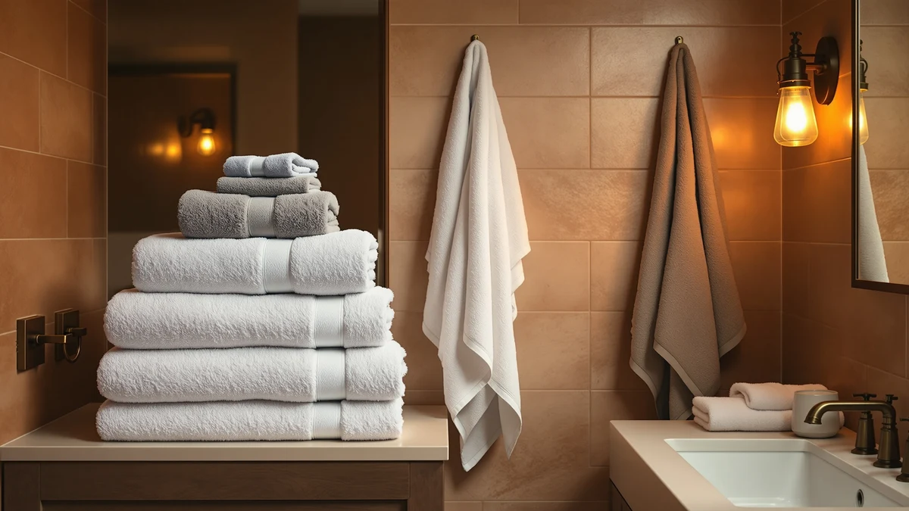

Best Microfiber vs Cotton Towels (2026) | Best Bath Towels
Prices and picks verified as of August 2026. Independent, reader-supported reviews.


Things to Know Before You Buy
- Cotton holds more water; microfiber grabs it faster. Thick cotton terry soaks up more total moisture per pass, while split-fiber microfiber pulls water off skin and hair in seconds.
- Microfiber air-dries in 2-3 hours; thick cotton can need 8 or more. In a humid, windowless bathroom that gap decides whether your towel smells fresh or musty by tomorrow.
- Cotton survives hot washes; microfiber does not. Heat stiffens and degrades synthetic fibers, so microfiber needs cool washes and low or no dryer heat.
- Microfiber costs less upfront, cotton costs less over time. A well-made cotton set outlasts two or three microfiber replacements with basic care.
- For hair, microfiber wins outright. Lower friction means less frizz and breakage, which is why dedicated hair wraps like the Hicober use microfiber.
The microfiber vs cotton towels question splits into two jobs: drying your body well after a shower and drying out fast between uses. Cotton terry holds more water per pass and feels plusher against your skin, while microfiber wicks moisture in seconds and dries on the bar in a fraction of the time. Pick the wrong one for your situation and you end up with a musty towel or a scratchy one.
We compared the two materials across the towels in our current lineup, including the cotton Utopia Towels 4 Pack Premium and the Hicober microfiber hair wrap, and looked at stitching, wash-cycle wear, drying times, and cost per year of ownership. Cotton won the comfort rounds and microfiber won the speed rounds, so match the material to the job: the bathroom hook, the gym bag, or your hair.
Quick Answer
Cotton is the better everyday bath towel for most people: it feels softer, holds more water, and years of hot washes won't hurt it. Our first recommendation is the cotton Utopia Towels 4 Pack Premium ($29.98). Microfiber wins for hair, gym, and travel, where fast wicking and a 2-3 hour bar-dry matter more than plushness.
What is Microfiber?
Microfiber is a synthetic textile, most often an 80/20 blend of polyester and polyamide, spun into strands finer than silk and then split lengthwise during manufacturing. That splitting is the whole trick: each fiber ends up with wedge-shaped channels that pull water in through capillary action, so the fabric grabs moisture on contact instead of soaking it up slowly the way a natural fiber does.
In towels, microfiber shows up in three main forms. Flat-weave models pack down small and dry fastest, which makes them the default for travel and the gym. Waffle-weave versions like the MICROFI bath towel add texture and airflow for a closer-to-terry feel. And hair wraps like the Hicober and the Kitsch XL use plush microfiber that dries hair with less rubbing than cotton terry.
The material has clear limits, though. It carries a slight grabby feel on dry skin that some people dislike, and it builds static in dry climates. Heat is its real weakness: a hot wash or a high dryer cycle stiffens the fibers and kills the wicking that made it useful.
What is Cotton Towels?
Cotton towels start as natural fiber spun into yarn and woven into terry cloth, the loop-pile fabric that has covered bathroom bars for over a century. The loops do the work: each one adds surface area, so a dense towel presents thousands of tiny sponges to your skin. Manufacturers measure that density in GSM (grams per square meter), and bath towels run from roughly 400 GSM for light, quick-drying models to 700 GSM for heavy hotel-style plush.
Quality varies with the cotton itself. Long-staple varieties like Turkish and Egyptian cotton produce smoother, stronger yarn that softens with washing instead of pilling; we break that difference down in our Turkish vs Egyptian cotton guide. Standard upland cotton, which fills most budget sets like the Utopia four-pack and the JMR bulk towels, still delivers the core cotton advantages at a lower price.
Those advantages are cotton's side of the microfiber vs cotton towels comparison: high total absorbency and a soft natural hand that improves over years. Cotton also tolerates hot water and high dryer heat, the two things that keep a daily-use towel sanitary.
Head-to-Head: Build Quality & Durability
Cotton takes this round on longevity. A well-stitched cotton towel with double-turned hems handles hundreds of hot wash cycles, and hot water is exactly what you want for something that stays damp against skin. The Utopia four-pack and the JMR bulk whites both follow that pattern: plain construction, reinforced edges, nothing that fails early. Expect a good cotton towel to serve five years or more before the pile flattens noticeably.
Microfiber wears out differently and sooner. The split fibers that make it absorb so fast also make it fragile: one hot wash can stiffen a microfiber towel permanently, and tumble-drying on high does the same. If you wash it cool and air-dry it, a microfiber towel stays functional for two to three years, but the plush face mats down with use and the wicking slows as the fibers fill with detergent residue and lint.
Cotton has one early-life quirk of its own, though: new towels shed lint for the first three or four washes and arrive coated in finishing agents that block absorbency. A couple of hot washes with no fabric softener fixes both.
Head-to-Head: Price & Value
Microfiber looks cheaper on the price tag and cotton looks cheaper on the calendar. The Hicober hair wrap costs $12.99 and the MICROFI waffle bath towel $23.20, while the cotton Utopia four-pack runs $29.98, which works out to about $7.50 per towel. On a per-towel basis, budget cotton already undercuts most full-size microfiber.
Stretch the math over five years and cotton pulls even further ahead of microfiber on value. One cotton set that survives the full period costs less than the two or three microfiber replacements you would buy in the same window, and bulk cotton options like the JMR multi-pack at $32.99 push the per-towel cost lower still for guest rooms and rentals. Microfiber earns its price when you need one specialized piece, like a hair wrap or a gym towel, rather than a full bathroom set.
Head-to-Head: Use Experience
Day to day, the two materials feel nothing alike. Cotton terry lands on your skin with weight and softness, absorbs in long slow passes, and wraps like a garment; the oversized MyOwn cotton towels lean into that with bath-sheet dimensions. Microfiber feels thin and slightly clingy by comparison, and on dry skin it produces a grabby sensation, like fabric catching on fingerprint ridges, that bothers some people every time and others not at all.
The bathroom bar tells the other half of the story. Microfiber air-dries in two to three hours, so it rarely develops the sour smell that haunts damp towels. A dense cotton towel in a humid, windowless bathroom can still hold moisture eight hours later, and a towel that stays damp breeds mildew. If your bathroom has poor ventilation, you can settle the microfiber vs cotton towels question on drying speed alone.
For hair, microfiber wins cleanly. Its smooth split fibers create less friction than terry loops, which means less frizz and breakage, and wraps like the Hicober stay put while you do everything else in your routine.
When to Choose Microfiber
Choose microfiber when speed and portability outrank plushness. That covers gym bags, where you stuff a towel away damp and it has to survive the trip home; travel, where packing volume matters; and any bathroom so humid that cotton stays wet between showers. The MICROFI waffle towel handles the full-body role in those situations, and its open weave dries even faster than flat microfiber.
Hair is the other clear microfiber use case, and the strongest one in the microfiber vs cotton debate. Rubbing wet hair with cotton terry roughs up the cuticle and causes frizz and breakage; a microfiber wrap absorbs the water with far less friction. The Hicober wrap at $12.99 covers most hair lengths, and the Kitsch XL at $20.79 fits long or thick hair that standard wraps cannot contain.
When to Choose Cotton Towels
Choose cotton for the towels you reach for after a shower. Nothing synthetic matches the soft, heavy feel of terry on skin, and a daily bath towel needs the hot-wash tolerance that cotton offers and microfiber cannot handle. The Utopia four-pack at $29.98 outfits a whole bathroom, and the oversized MyOwn pair at $16.99 suits anyone who finds standard towels skimpy.
Cotton also makes sense wherever towels take abuse. Households with kids, guest bathrooms, and short-term rentals all demand frequent sanitizing washes, and cotton shrugs those off while microfiber degrades. The JMR bulk whites exist for exactly that duty cycle. A towel that dries a body daily and hits the laundry weekly belongs in cotton; it repays its slower bar-dry with years of extra service.
Our Top Picks
These three towels put the microfiber vs cotton comparison into practice: a cotton set for daily showers, a microfiber wrap for hair, and an oversized cotton pair for bath-sheet coverage.

Editor’s Pick
Utopia Towels 4 Pack Premium
Four soft cotton towels for $29.98, about $7.50 each, the set that shows why cotton wins the daily-shower rounds.
$29.98
Check Price on Amazon
Best Value
Hicober Microfiber Hair Towel Wrap
A $12.99 microfiber wrap that speeds up hair drying and cuts frizz. This is the job microfiber does best.
$12.99
Check Price on Amazon
Premium Choice
MyOwn Cotton 2 Pack Oversized
Two oversized cotton towels with bath-sheet coverage for $16.99, plush cotton feel without a luxury price.
$16.99
Check Price on AmazonAre microfiber towels more absorbent than cotton towels?
Cotton holds more total water, while microfiber absorbs faster.
Do microfiber towels dry faster than cotton towels?
Yes, and the gap is large.
Frequently Asked Questions
Are microfiber towels more absorbent than cotton towels?
Do microfiber towels dry faster than cotton towels?
Which lasts longer, microfiber or cotton towels?
Are microfiber towels better for your hair?
Can you wash microfiber and cotton towels together?
Final Verdict
In the microfiber vs cotton towels matchup, cotton takes the bathroom and microfiber takes everything that has to dry fast. For daily showers, start with the cotton Utopia Towels 4 Pack Premium at $29.98. It is soft and absorbent, and it will take years of hot washes without wearing out. Add one microfiber piece, the Hicober wrap for hair or a waffle towel for the gym, and you cover both jobs for under $45 total.